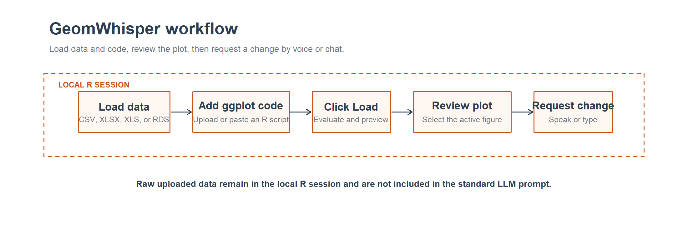
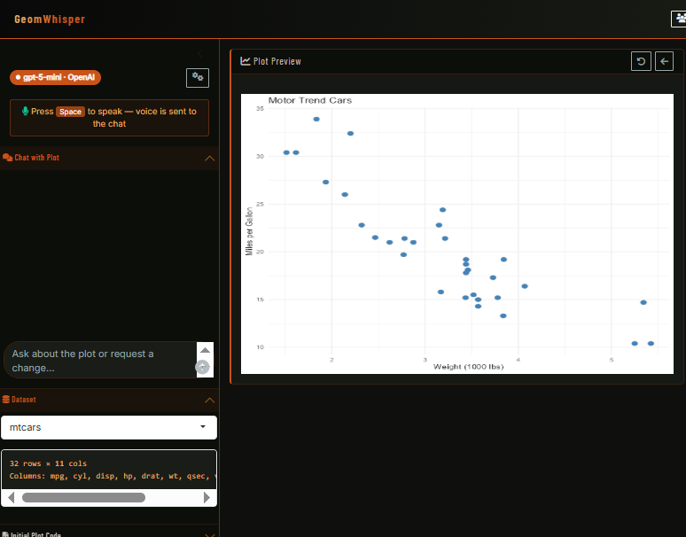
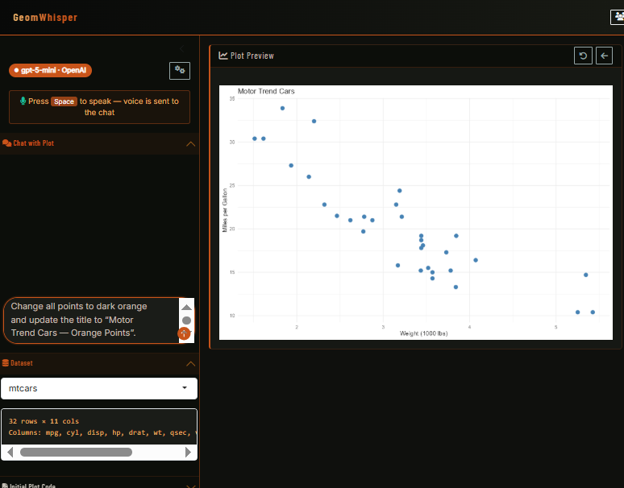
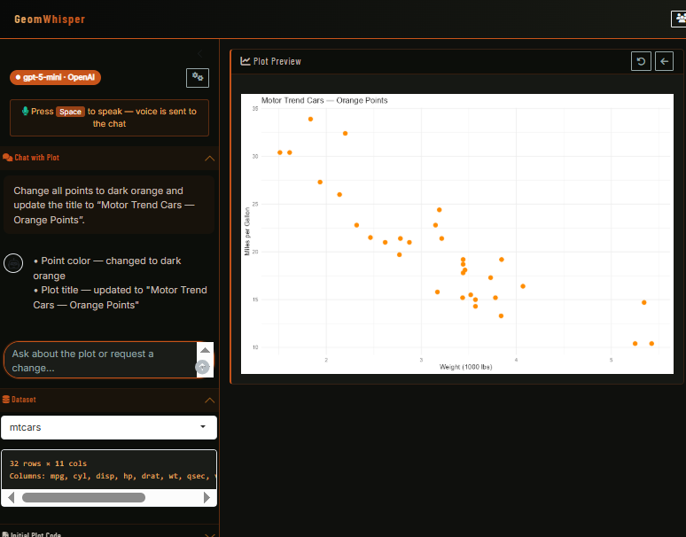

GeomWhisper: conversational and voice-driven refinement of ggplot visualizations
Tushar Patni ![]()
Jade Wang
Yimei Li
Summary
Researchers often need to iterate quickly on statistical graphics while talking through revisions with clinical or scientific collaborators. In practice, small changes to colors, annotations, smoothing layers, faceting, themes, or chart types frequently require repeated back-and-forth between a subject-matter expert and a statistical programmer or biostatistician editing ggplot2 code (Wickham 2016).
GeomWhisper is a locally runnable Shiny application that shortens this loop by letting users speak or type natural-language requests to modify a ggplot2 visualization (Chang et al. 2026). The application combines browser-based speech capture, a multi-provider large language model (LLM) layer built on ellmer (Posit Software, PBC 2025), and an R tool-calling pipeline that converts user requests into plot-editing code and updates the visualization through a streaming chat interface provided by shinychat (Sievert and Cheng 2026). GeomWhisper is intended for researchers, scientists, and doctors who need a lower-friction way to refine figures during collaborative analysis sessions, including teams whose analyses use ggplot2.
Statement of need
ggplot2 is widely used in research because it is expressive, reproducible, and well integrated with data-analysis workflows in R (Wickham 2016). Those same strengths create a practical bottleneck in collaborative figure review. When a clinician, scientist, or domain collaborator wants to try a different title, color mapping, smoother, facet variable, or plot type, the change often depends on direct code edits rather than on the collaborator’s own domain language. This can slow down exploratory work and shift figure refinement into a serial workflow mediated by the analyst.
GeomWhisper addresses this problem in three complementary ways. First, it ships as a standalone desktop application with installers for Windows and macOS. Both desktop distributions let users start the application without opening RStudio or manually managing R packages; uploading an R script and a data file is sufficient to produce and refine a publication-quality ggplot2 figure. Each platform-specific installer provisions the R runtime when needed, and its launcher installs required R packages in the background. Second, by giving subject-matter experts a direct conversational interface for requesting changes, it removes the dependency on a biostatistician or statistical programmer as an intermediary for every incremental revision. Rather than the current serial workflow—where a collaborator describes a desired change, an analyst implements it in code, and the updated figure is returned for review—researchers can request and see the change in the same conversation, reducing a multi-step relay to a single spoken or typed request. Third, uploaded datasets remain in the local R session. The standard LLM prompt does not automatically include data-frame values; it supplies the user’s request and current plot code instead. This prompt-minimization and privacy preserving design supports clinical workflows where sharing patient-level records with external services is often prohibited or requires burdensome governance approval.
Existing language-assisted and GUI-based tools lower the syntax barrier, but they usually assume that the person invoking them is already operating inside the R ecosystem: installing a package, configuring an API key, launching a Shiny app, or working in an editor such as RStudio or Positron (smouksassi 2026; Cheng, Altman, and Vaughan 2026; Brandmaier 2021). GeomWhisper instead targets collaborators who may never open an IDE at all.
The software is designed for researchers, scientists, and doctors working with teams whose analyses use R graphics, but who want a faster conversational layer for changing plots during analysis review, figure design, or collaborative interpretation. The software has been discussed with researchers, and we have begun working with additional clinical and scientific collaborators to introduce GeomWhisper into their figure-review workflows.
State of the field
Researchers already have several ways to lower the barrier to working with ggplot2 graphics. GUI-based builders such as esquisse (Meyer and Perrier 2026) and the earlier Shiny application ggplotwithyourdata (smouksassi 2026) let users upload data, choose geoms, adjust mappings, and export plots through widgets rather than code. These tools reduce syntax burden, but they are centered on GUI-driven plot construction and option selection, not conversational revision of a user-supplied plotting script that is already under discussion.
At the other end of the spectrum, ggx (Brandmaier 2021) provides a natural-language interface to common ggplot2 styling operations such as hiding legends or rotating axis labels. Its design is intentionally lightweight: it uses keyword matching rather than an LLM and serves mainly as a helper for users already writing ggplot2 code, not as a live multi-turn application with voice input, maintained plot state, or local tool-calling.
A recent experimental package, ggbot2 (Cheng, Altman, and Vaughan 2026), comes closest to GeomWhisper in interaction style. It launches a Shiny app that lets users create and modify plots with spoken or typed commands, but its documented workflow assumes an R user who can install the package, configure an OpenAI API key, and launch the app from an active R session.
Generic LLM interfaces such as ChatGPT (OpenAI 2026) can also propose plotting code, but they operate outside the local R session, do not preserve the exact live plot state under review, and cannot be tested by a reviewer as a self-contained application.
GeomWhisper sits within this emerging ecosystem but targets a narrower and more operationally constrained use case. We are not aware of another open-source tool that combines local-first execution where raw data stay on the user’s machine, multi-provider routing including local models, live editing of user-supplied ggplot2 code inside a running Shiny session, both voice and typed chat interaction, and installer-based desktop distribution for collaborators who may not use R or RStudio.
Software design
GeomWhisper is a local-first Shiny application: the interface, dataset, and plot rendering stay in the user’s R session. The standard LLM context contains the user’s request and current plot code, rather than automatically including uploaded data-frame values. This prompt-minimization boundary, rather than the selected LLM provider, protects the underlying data. Browser-based speech capture and typed chat use the same conversational workflow, allowing users to choose the input method that best suits their setting and accessibility needs. ellmer provides a common interface to OpenAI, Anthropic, Google Gemini, and Ollama (Posit Software, PBC 2025), letting teams select a cloud provider or a locally running model according to cost and connectivity needs. Users may upload a plain-text Markdown (.md) file containing journal-specific figure requirements; its contents are included as instructions in subsequent LLM requests.
Each request is handled through a constrained tool-calling workflow that revises and evaluates plot code in an isolated environment before the live figure is updated. The application preserves multi-turn context, supports scripts with multiple plots, and keeps an undoable history so collaborators can safely compare alternative views. When an implemented revision changes or adds a statistical element, the chat displays a distinct warning; other implemented edits are described in the ordinary chat response. Installers for Windows and macOS provision R when needed, install missing R dependencies into the user library at first launch, and start a local Shiny session. They require R 4.4 or later and guide users through installing or updating R when necessary. The repository includes an offline smoke test that verifies local helper functions and safe evaluation of valid and invalid ggplot2 code without requiring live API keys. A direct shiny::runApp() launch from an R session, such as RStudio, remains available for other platforms.
To adapt an existing script, users refer to a single uploaded dataset as user_data; when several files are uploaded, each is also available through a sanitized filename-derived variable shown in the Dataset panel. A single plot should be assigned to p (or left as the final ggplot() expression), whereas multi-plot scripts use distinct named ggplot objects. A downloadable script-preparation prompt guides users in replacing file reads with these variables and removing display or export calls before the script is loaded.
Figure 1 summarizes the main interaction sequence. Users load one or more data files, upload or paste a ggplot2 script, and click Load to evaluate and review the initial plot. They can then speak or type a revision request. GeomWhisper evaluates each revision locally and refreshes the preview and chat response. This sequence can be repeated for further refinement. Undo restores the prior plot version, while Reset returns the plot to its initial state. Raw uploaded data remain in the local R session and are not included in the standard LLM prompt.

The screenshots below show a complete running example. On launch, GeomWhisper displays its bundled mtcars scatter plot (Figure 2). A user then enters a request to recolor the points and update the title (Figure 3). The application evaluates the revision and refreshes the plot preview; the chat reports the applied changes (Figure 4).

mtcars scatter plot. The left panel shows the active provider, voice shortcut, chat input, and dataset controls.

Research impact statement
GeomWhisper’s research impact is to keep figure refinement inside an R-based workflow while making routine plot changes accessible through natural-language interaction. Requested revisions are evaluated in the active Shiny session and update the displayed ggplot2 figure directly. An undoable session history lets collaborators compare alternative figure revisions without having to write or edit R code themselves.
The data-governance benefit comes from the application’s prompt boundary, not from the chosen provider: uploaded data-frame values remain local and are not automatically included in standard LLM context. The multi-provider design has a separate practical benefit: a locally running Ollama model offers a cost- efficient option for teams with limited cloud access while retaining the same conversational interface.
The immediate impact is workflow-level: the software lowers the amount of direct code editing required for routine figure revisions while preserving an R-based analysis environment. The repository supports reuse through an offline smoke test, local launcher support, contribution guidance, and multi-provider execution paths. These features allow research teams to evaluate the application in their own analysis settings without requiring RStudio or embedding their plotting workflow in an external chat service.
AI usage disclosure
GitHub Copilot (Claude Sonnet 4.6) assisted with portions of software development, documentation revision, repository preparation, and drafting support for this manuscript. All AI-assisted outputs were reviewed, edited, and validated by the human authors, who retained responsibility for the software design, the research framing, and the correctness of the manuscript.
Acknowledgements
The authors thank the collaborators whose figure-review workflows helped shape the design goals for GeomWhisper, especially the need for fast, conversational iteration on ggplot2 figures during active research discussions.